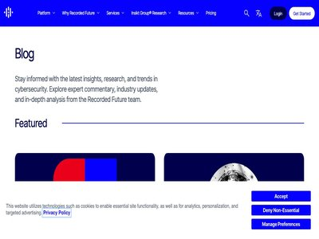
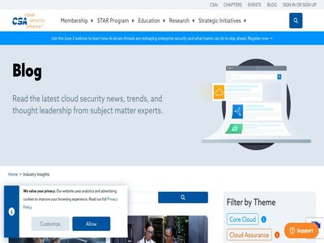

November 18, 2026 · 29 articles
Government tech debt is a national security risk
November 18, 2026
With 80% of federal IT budgets spent maintaining aging legacy systems, fragmented government networks are struggling to defend against AI-accelerated cyberattacks from foreign a... (CyberScoop)

The challenge of defending against bulletproof dead drops on public blockchains
November 18, 2026
The evolution of malware command-and-control (C2) infrastructure has shifted away from fragile, centralized servers and hardcoded domains toward resilient, decentralized blockch... (Cisco Talos)
UAT-12643: Suspected North Korea-aligned actor blends blockchain resilience with targeted infostealing
November 18, 2026
Cisco Talos discovered malicious infrastructure associated with a financially motivated threat group we are tracking as UAT-12643. (Cisco Talos)

Critical Perforce Puppet RCE Exploited in Attacks
November 18, 2026
Tracked as CVE-2026-115731, it allows a client that holds any CA-signed agent certificate to execute code on the server. The post Critical Perforce Puppet RCE Exploited in Attac... (SecurityWeek)

Apache warns of Roller RCE vulnerability exploited in attacks
November 18, 2026
Apache has released security updates to address a critical Roller flaw that threat actors are exploiting to gain code execution on vulnerable servers. [...] (BleepingComputer)

Three AI Models Agree on Just One of 121 Potential Code Flaws
November 18, 2026
Echo tested Claude Mythos, GPT-5.6 Sol and GLM-5.3 on the same code and found little overlap (Infosecurity Magazine)

Introducing the StepSecurity Secure Registry Community Tier, Integrated with Harden-Runner
November 18, 2026
Today, we’re making the StepSecurity Secure Registry available for free as part of our community tier, and integrating it with Harden-Runner to make it easier to adopt in GitHub... (StepSecurity Blog)

UK MPs want AI watchdog with power to pull the plug on dangerous models
November 18, 2026
Parliamentary committee says tech giants can't be left to mark their own homework when it comes to AI safety (The Register - Security)
Microsoft announces Windows Server 2028 with hardened security
November 18, 2026
Microsoft has announced Windows Server 2028, the next major release of its server operating system, at the Ignite 2026 conference on Tuesday. [...] (BleepingComputer)

Ubuntu AI security patches are here, if you’re willing to test them yourself
November 18, 2026
Canonical is letting Ubuntu Pro customers install security patches written by AI agents before its engineers finish reviewing and testing them. The patches come from Surge, a sy... (Help Net Security)
Oracle Patches 950 Vulnerabilities With November 2026 CSPU
November 18, 2026
Over 300 patches address unauthenticated, remotely exploitable flaws, while 62 fix critical-severity flaws. The post Oracle Patches 950 Vulnerabilities With November 2026 CSPU a... (SecurityWeek)

CISA Urges Immediate Patching of Java4Shell Flaw That Could Allow Remote Code Execution
November 18, 2026
The U.S. Cybersecurity and Infrastructure Security Agency (CISA) has urged organizations to immediately patch a newly disclosed critical security flaw impacting Oracle Java. The... (The Hacker News)
Java4Shell Vulnerability Puts Many Enterprise Applications at Risk of Takeover
November 18, 2026
Calif demonstrated remote code execution in Jira, Jenkins and Keycloak, while VulnCheck says real-world RCE requires per-target work The post Java4Shell Vulnerability Puts Many... (SecurityWeek)
Deutsche Telekom IoT’s CEO on securing devices that run for 20 years
November 18, 2026
In this Help Net Security interview, Christian Schwalbe, CEO of Deutsche Telekom IoT, talks about the forgotten devices that create the most risk in IoT deployments. He explains... (Help Net Security)
Once a scam ends the victim blaming begins
November 18, 2026
Blaming people who fall for scams deepens the harm and teaches them to stay silent the next time, cyberpsychologist Dr. Nicola Fox Hamilton told the audience at IRISSCON 2026 in... (Help Net Security)
Attackers Compromise Microsoft's Agent Framework PyPI Package to Steal Cloud Credentials
November 18, 2026
Threat actors have compromised Microsoft's agent-framework package to push a credential stealer, according to reports from Aikido, Chainguard, Endor Labs, OX Security, SafeDep,... (The Hacker News)
TapMap: Free, open-source network map
November 18, 2026
TapMap is a free, open-source desktop app that plots a computer’s active network connections on an interactive world map. It scans open sockets, pulls out the remote IP addresse... (Help Net Security)
BubbleLoader malware turns copies of WinRAR and Windows Media Player into carriers
November 18, 2026
ReversingLabs has taken apart BubbleLoader, a loader that turns ordinary Windows programs into carriers for other malware. The attackers rewrite a handful of instructions at a p... (Help Net Security)
Russian COLD RELIC Hackers Use Stolen Google Workspace Data to Breach Second U.S. Organization
November 18, 2026
The Russia-linked cyber espionage group known as Cold Relic (formerly COLDRIVER and UNC4057) has been observed weaponizing a single cloud compromise into a launchpad for a serie... (The Hacker News)
Product showcase: iVerify Basic helps users check device security and improve privacy
November 18, 2026
iVerify Basic is a mobile security app for individuals who want to check their devices for signs of compromise and improve their security settings. It is available for iOS and A... (Help Net Security)
Fraudsters feed the right face into identity checks through virtual cameras
November 18, 2026
Document fraud remains the largest attack category in Entrust’s The Professionalization of Fraud: 2027 Identity Fraud Report, with criminals combining physical counterfeits, dig... (Help Net Security)

Risky Bulletin: Hackers hijack Optimizely to deliver malware on 178 popular sites
November 18, 2026
In other news: Hackers breach Japan's supercomputer; Edge is getting a Lockdown Mode; EU sanctions NoName057(16). (Risky Business News)

Windows 11 Adds a Single Pass-or-Fail Check for Eight Security Features: Developers Decide How Their Apps Respond
November 18, 2026
Microsoft has released Baseline Protection in an Insider Preview. It combines eight checks, including Secure Boot and Memory Integrity, into a single pass-or-fail result that ap... (Joho no Todai)

Attackers Used Optimizely to A/B Test Malware on Top Websites
November 18, 2026
At least 178 top web destinations unwittingly served a variety of malware exploits against visitors over the past 24 hours thanks to a security vulnerability involving Optimizel... (KrebsOnSecurity)
New StepSecurity Control: Audit GitHub Fork PR Workflow Approval Policies
November 18, 2026
StepSecurity’s new control flags GitHub organizations and public repositories that let fork pull request workflows run without approval. (StepSecurity Blog)
OpenJDK Base64 Memory Corruption Flaw CVE-2026-114938 Enables Unauthenticated RCE in Six Products Including Jenkins and Jira
November 18, 2026
A memory corruption vulnerability in OpenJDK's Base64 decoder, CVE-2026-114938, has been shown to enable unauthenticated remote code execution in six products, including Jenkins... (Joho no Todai)

Java4Shell
November 18, 2026
What is the Vulnerability? CVE-2026-114938, known as Java4Shell, is a critical heap-based buffer overflow vulnerability in the Base64 implementation of the Java standard library... (FortiGuard Labs)
Classified Communications Network at the National Security Agency Goes Down, Defense Official Says
November 18, 2026
The problem disrupted the operations of NSANet, a classified internal network used by employees of the agency. The post Classified Communications Network at the National Securit... (SecurityWeek)

ISC Stormcast For Wednesday, November 18th, 2026 https://isc.sans.edu/podcastdetail/10184, (Wed, Nov 18th)
November 18, 2026
(SANS ISC)
November 17, 2026 · 73 articles
Six Zero-Days Found in Danfoss Refrigeration Controller in One Hour, With Basic Defenses Missing
November 17, 2026
A researcher found six unauthenticated remote-code-execution zero-days in the latest Danfoss firmware after one hour of manual analysis without AI or fuzzing. Belgian authoritie... (Joho no Todai)
How CISA is prioritizing companies for talks about security improvements
November 17, 2026
CISA acting director Nick Andersen made his remarks after speaking at FedTalks, presented by FedScoop. The post How CISA is prioritizing companies for talks about security impro... (CyberScoop)

Apple Services Disrupted as NSA Network Goes Down and Equinor Faces Cyberattack
November 17, 2026
Apple and NSA services faced outages as Equinor reported a cyberattack, highlighting the risks facing increasingly connected infrastructure. Apple customers faced widespread ser... (Security Affairs)
Japan takes Fugaku supercomputer offlline after cyberattack
November 17, 2026
The Fugaku supercomputer operated by Japan's RIKEN Center for Computational Science has been taken offline following a security breach. [...] (BleepingComputer)

CVE-2026-130622 and CVE-2026-130623 - Incorrect authorization in credential loading and handling for namespace-scoped issuers in AWS Private CA Connector for Kubernetes (aws-privateca-issuer)
November 17, 2026
Bulletin ID: 2026-187-AWS Publication Date: 11/17/2026 12:00 PM PST Description: Incorrect authorization in the credential loading logic in AWS Private CA Connector for Kubernet... (AWS Security Bulletins)

Kazakh ransomware hacking suspect extradited from Italy
November 17, 2026
The U.S. accused Roman Khlynovskiy of participating in ransomware attacks against healthcare organizations, schools and companies as part of the "8 Digits Team" connected with I... (The Record)
Chinese state group developing automated attack tool for cyber espionage, Google says
November 17, 2026
Google released its latest AI Threat Tracker report on Monday, writing that threat actors are rapidly evolving their use of artificial intelligence in attacks - now leaning more... (The Record)
Market Research Giant Ipsos Investigating Breach of Internal System
November 17, 2026
The company made the incident public on Monday, November 16, five days after filing a complaint with authorities. The post Market Research Giant Ipsos Investigating Breach of In... (SecurityWeek)
Detectify launches Agentic Tooling to verify vulnerabilities in live applications
November 17, 2026
Detectify has launched Agentic Tooling. It lets organizations’ own AI agents, running in their own environments, proactively investigate suspected vulnerabilities and test wheth... (Help Net Security)

Reducing Microsoft Sentinel Costs Without Compromising Detection - Part 3: The DNS Quest
November 17, 2026
DNS is one of the most critical log sources for effective security monitoring. In this part of our blog series, we explore how Sentinel Summary Rules can reduce the cost of inge... (NVISO Labs)
Access Dental Management Data Breach Impacts Over 340,000
November 17, 2026
Hackers breached Access Dental’s network and stole personal, health, and insurance information. The post Access Dental Management Data Breach Impacts Over 340,000 appeared first... (SecurityWeek)
Uber notifies drivers of data breach affecting nearly 150,000 people
November 17, 2026
Ride-hailing company Uber is notifying nearly 150,000 drivers that attackers stole their data after breaching AI infrastructure provider Fireworks in early October. [...] (BleepingComputer)

High volume phishing campaign uses Microsoft 365 outage lures to target multiple industry sectors
November 17, 2026
Microsoft Threat Intelligence observed a high-volume phishing campaign using Microsoft 365 outage-themed lures to target organizations across multiple sectors worldwide. The pos... (Microsoft Security Blog)
Harden-Runner Brings Runtime Security Inside Kata and Nitro Runner Pods
November 17, 2026
Harden-Runner monitors GitHub Actions jobs and enforces egress policies inside runner microVMs on Kata Containers and Amazon EKS Nitro Sandboxes. (StepSecurity Blog)
NVIDIA Makes Clear It Will Continue Without Huang: Revenue Hits $115.8 Billion as Board Creates Permanent Security Committee
November 17, 2026
Hours after Huang said he was willing to return as CEO, NVIDIA's board chair said the company would not reinstate him. The same day brought $115.8 billion in quarterly revenue,... (Joho no Todai)

Introducing simplified onboarding for AWS WAF Bot Control at the targeted inspection level
November 17, 2026
Today, we’re announcing simplified onboarding and bot confidence levels for AWS WAF Bot Control at the targeted inspection level, which we refer to as Targeted bot control in th... (AWS Security Blog)
A vulnpocalypse bug worthy of attention: Researchers disclose critical flaw in Java with help of AI
November 17, 2026
Oracle shipped a patch this week for the flaw, which a short string of letters can trigger to corrupt memory in Java and hand attackers control of the servers running it. The po... (CyberScoop)
Cloud keys leaked in Docker Hub images are stolen within seconds
November 17, 2026
Credentials and access secrets exposed in public Docker Hub images are being extracted and exploited by attackers within as little as eight seconds of publication. [...] (BleepingComputer)

'TheMailer' Phishing Kit Puts AI in the Driver's Seat
November 17, 2026
The commercial kit uses attacker-supplied AI models to personalize lures, evade spam filters, and scale campaigns to tens of thousands of targets. (Dark Reading)

Borrowed Code, Real Consequences: What OPTIMJACK Teaches Us
November 17, 2026
The OPTIMJACK supply chain attack demonstrates how a compromised vendor script can expose websites, highlighting the need for strict segmentation. The post Borrowed Code, Real C... (Palo Alto Networks Unit 42)
Securely exposing Amazon Bedrock AgentCore Runtime
November 17, 2026
Amazon Bedrock AgentCore Runtime delivers a secure serverless environment to deploy AI agents and tools at scale. When you start talking to your agent, the runtime launches a de... (AWS Security Blog)

Quad9’s withdrawal from France: A canary in the coal mine
November 17, 2026
Quad9's forced withdrawal from France highlights the dangers of mandating DNS-level blocking. We explore why forcing public resolvers to act as content filters is technically fl... (Cloudflare Blog)
Gemini test proves once again that amoral AI agents will do almost anything if told ‘NEVER give up’
November 17, 2026
If you design a test to find misalignment, you will find misalignment (The Register - Security)
Apple reports outages affecting iCloud Mail, AppleCare and more
November 17, 2026
Apple is reporting service disruptions affecting several of its services, including iCloud Mail, iCloud Account & Sign In, Apple School Manager, and Schoolwork. [...] (BleepingComputer)

OpenAI lost control of AI agents over 80 times, California alleges
November 17, 2026
California is suing the company, alleging that OpenAI failed to contain experimental AI agents and misled the public about its safety measures. (Malwarebytes Labs)
Researchers hijack Hugging Face account for popular Kokoro AI model
November 17, 2026
A Lack of ownership verification on the Hugging Face platform allowed researchers to take control of Kokoro, a text-to-speech model used in projects from Google, NVIDIA, AMD, In... (BleepingComputer)
AI Framework Autonomously Weaponized Flaws in Real Attacks, Google Says
November 17, 2026
Threat actors are deploying multi-agent offensive frameworks to increase the velocity of multi-stage intrusions. The post AI Framework Autonomously Weaponized Flaws in Real Atta... (SecurityWeek)
Security for the agentic era, powered by Microsoft Perception
November 17, 2026
Read about updates to Microsoft Perception and the new Microsoft Security cyber stack to defend against threats, secure agents, and protect your digital estate. The post Securit... (Microsoft Security Blog)
Tor releases emergency update amid ongoing DDoS attack
November 17, 2026
The Tor Project has released a security update for its network relay software to increase defenses against an ongoing distributed denial-of-service attack that it says has overw... (BleepingComputer)
Trigram Campaign Impersonates About 50 AI and Blockchain Brands to Target Devs with Infostealers
November 17, 2026
Artificial intelligence (AI), blockchain, and logistics sectors across Europe and the U.S. have emerged as the target of a large-scale, industrialized campaign dubbed Trigram. "... (The Hacker News)
The risks of device code authentication for AI coding agents
November 17, 2026
Lab research shows how device code phishing, a technique that applies to any device-flow client, can extend to AI coding agents, using GitHub Copilot CLI as an illustrative exam... (Microsoft Security Blog)

CISA Adds One Known Exploited Vulnerability to Catalog
November 17, 2026
CISA has added one new vulnerability to its Known Exploited Vulnerabilities (KEV) Catalog , based on evidence of active exploitation. CVE-2026-115731 Perforce Puppet Enterprise... (CISA Current Activity)
Using the AWS RMiT workbook and ISO Compliance Guides to support your BNM submissions
November 17, 2026
Your next Bank Negara Malaysia (BNM) notification submission needs auditable evidence of how Amazon Web Services (AWS) controls align with Risk Management in Technology (RMiT) r... (AWS Security Blog)

Run Your Qualys Program by Conversation, Inside Google Cloud’s Gemini Enterprise
November 17, 2026
Qualys ROCky for Gemini Enterprise, now available on Google Cloud Marketplace, allows you to ask your vulnerability, asset, and risk questions, get an answer ranked by real risk... (Qualys Blog)
Understanding the Risks of Public AWS AMIs: Hidden Dangers of Malicious and Misconfigured Images
November 17, 2026
Key Takeaways Public Amazon Machine Images (AMIs) speed up deployment, but anyone can publish one, so they should never be trusted based on their name or description alone. Mali... (Qualys Blog)
Anthropic Cuts Disclosure Deadline to 30 Days For Serious Bugs
November 17, 2026
Anthropic will publish serious flaws found by its AI models 30 days after reporting them (Infosecurity Magazine)
Inside Modern Phishing Kits Built to Steal Microsoft 365 Sessions
November 17, 2026
Huntress researchers break down how EvilTokens, Knight Office, and Kali365 capture and replay M365 tokens, plus how defenders can detect and contain them. [...] (BleepingComputer)

Who Has Access to Claude? Bring AI Identity and Access Context Into Surface Command
November 17, 2026
Approving an AI service is only the starting point. As employees adopt Claude and their responsibilities change, security teams need to know who has access, which users hold adm... (Rapid7 Blog)
Fandango Warns Ticket Buyers of Payment Card Data Exposure
November 17, 2026
Card numbers, CVVs, expiration dates, and email addresses used at Fandango’s ticketing checkout over four days in October may have been exposed. The post Fandango Warns Ticket B... (SecurityWeek)
AppGate Optimizer helps teams narrow access without disrupting users
November 17, 2026
AppGate has announced the general availability of AppGate Optimizer to help organizations reduce exposure from over-provisioned access, cut the time spent on manual access revie... (Help Net Security)
Pretxt Emerges Stealth With $5M Seed and an AI Supervision Tool
November 17, 2026
Pretxt provides technology to prevent AI agents escaping their guardrails and causing unintended harm. The post Pretxt Emerges Stealth With $5M Seed and an AI Supervision Tool a... (SecurityWeek)
Pakistani hackers are spying on defense workers with fake job sites
November 17, 2026
The perpetrators targeted job seekers in India, mostly, but some of the effort could be more broadly targeting defense contractors and military personnel. The post Pakistani hac... (CyberScoop)
ConnectSecure brings adaptive AI testing to vulnerability management
November 17, 2026
ConnectSecure has announced Agentic AI Penetration Testing, a new capability designed to help managed service providers (MSPs) and enterprise security teams better understand wh... (Help Net Security)

Uncovering GhostMap: The Rootkit Behind Shai-Hulud’s Rusty Cousin
November 17, 2026
TL;DR: GhostMap is Aqua Nautilus’s research name for the Linux eBPF rootkit shared across examined IronWorm and Atomic Arch malware payloads. It blinds user-space applications b... (Aqua Security Blog)
Airlock Digital blocks unauthorized AI agent actions at the endpoint
November 17, 2026
Airlock Digital has announced the availability of Agentic Control with the release of Airlock Digital v7.1. Agentic Control includes dedicated Agentic Steering capabilities for... (Help Net Security)
“Amazon” job offer promises $5,000 a month, but it’s got all the signs of a scam
November 17, 2026
Lookalike Amazon sites advertise high-paying remote jobs, but has all the signs of a reshipping scam. (Malwarebytes Labs)
MSP ScreenConnect Servers Targeted in Month-Long Campaign
November 17, 2026
More than 40 servers received over 688,000 requests exploiting CVE-2026-84869 to execute guest-pushed files. The post MSP ScreenConnect Servers Targeted in Month-Long Campaign a... (SecurityWeek)
Grok Bots Attempt to Access Corporate Data Without User Approval
November 17, 2026
Two AI agents, separately over a five-day period, autonomously tried to access connected applications, including Google Calendar, Gmail, Slack, and GitHub, without account owner... (Dark Reading)
Corma Receives $125 Million to Train Foundation Models for Defensive Cybersecurity
November 17, 2026
Led by NEA and supported by existing investors, the funding brings the company’s valuation to $1 billion. The post Corma Receives $125 Million to Train Foundation Models for Def... (SecurityWeek)
REIT move? Blackstone joint venture buys AWS campuses to lease back to the cloud giant
November 17, 2026
Amazon shunts some real estate off its books, a move Omdia analyst says may be about economics, as AI buildout weighs on hyperscaler finances (The Register - On-Prem)
N-able Kills Legacy APIs, Patches 17 N-central Zero-Days
November 17, 2026
The patches target recently disclosed zero-days, as well as vulnerabilities already exploited in the wild. The post N-able Kills Legacy APIs, Patches 17 N-central Zero-Days appe... (SecurityWeek)
Hackers Found a Way Around GitHub SHA Pinning. This Webinar Explains How to Close the Gap
November 17, 2026
Pinning GitHub Actions to an exact version of their code, known as SHA pinning, has become the go-to defense against software supply chain attacks. Attackers have already found... (The Hacker News)
Researchers Detail iPhone Flaw That Let Apps Record Audio Despite Denied Microphone Permission
November 17, 2026
A now-patched flaw in Apple's audio service let apps on iPhones and iPads record audio even after the user tapped "Don't Allow" on the microphone prompt. The first security upda... (The Hacker News)

Formal Verification of the Signal Protocol Using AI
November 17, 2026
This seems like a good thing: Google Deepmind researchers used agentic AI to mathematically prove, or “formally verify,” a number of the Signal protocol’s key cryptographic guar... (Schneier on Security)
Tampered Optimizely Scripts Steal Crypto and Card Data on 178 Organizations' Sites, Including Zoom, BBC, and CNN
November 17, 2026
Tampered scripts from A/B testing platform Optimizely delivered cryptocurrency theft, card skimming, and iOS exploits across sites belonging to 178 organizations, including Zoom... (Joho no Todai)
Opinion pollster Ipsos 'fesses up to 'cybersecurity incident'
November 17, 2026
Market research company brings in external specialists to grok cause and scope (The Register - Security)
Holiday shopping in a world of fakes: How AI is changing the game
November 17, 2026
It’s the most wonderful time of the year-especially for scammers looking to make the most of shopping season. (Malwarebytes Labs)
New GitDoor and GraphDoor Backdoors Turn GitHub and SharePoint Into Covert C2 Channels
November 17, 2026
Government sectors in Asia and Africa have been targeted by an active cyber intrusion campaign that delivers to previously undocumented backdoors that leverage legitimate servic... (The Hacker News)
The Super Intelligence Task Force should open the door to defenders
November 17, 2026
Artificial intelligence models now find software vulnerabilities faster than organizations can fix them. In HackerOne’s platform data, the valid report backlog is up 131% over t... (CyberScoop)
A phishing page interested in MX records, (Tue, Nov 17th)
November 17, 2026
I&#;x26;#;xe2;&#;x26;#;x80;&#;x26;#;x99;ve mentioned before in some of my diaries that it can be instructive to look at what appear to be &#;x26;#;xe2;&#;x26;#;x80;&#;x26;#;x9c;... (SANS ISC)
ICO Issues GTA 6 Scam Warning as Release Date Nears
November 17, 2026
The UK's Information Commissioner’s Office has warned of Grand Theft Auto 6-related cyber-attacks (Infosecurity Magazine)
Court clears brothers of $25 million Ethereum crypto heist charges
November 17, 2026
US District Judge Jessica Clarke has acquitted two brothers accused of stealing $25 million in cryptocurrency in about 12 seconds through a scheme that exploited a bug in the Et... (BleepingComputer)

Building Sovereign AI in Europe, With Europe: Our New Startup Accelerator
November 17, 2026
Today we’re announcing an open call for applications for the Google for Startups Accelerator: Sovereign AI . Available in Europe and Israel, this initiative supports startups th... (Google Cloud Blog)
Sovereign AI in Europe: New ways to control your AI stack
November 17, 2026
Today in Brussels, public sector leaders, policymakers and partners are meeting at the Sovereign AI Summit to discuss how to build the next decade of Europe's public services, h... (Google Cloud Blog)

Threat Researcher’s Notebook: BubbleLoader
November 17, 2026
(ReversingLabs Blog)
ConnectWise Warns ScreenConnect Attacks Continue as SCKit Targets Unpatched Systems
November 17, 2026
ConnectWise on Monday said it completed its investigation into unauthorized access targeting partner ScreenConnect environments, and recommended customers to ensure that the tec... (The Hacker News)
AI security took more than one in three cybersecurity seed funding deals
November 17, 2026
Seed deals for cybersecurity startups dipped slightly in the third quarter of 2026, the second decline in a row, while the wider U.S. venture market had one of its best quarters... (Help Net Security)
N-able Patches 17 N-central Flaws as Attackers Exploit Earlier Bugs to Deploy Crypto Miners
November 17, 2026
N-able has released a new security update to address additional critical security flaws impacting N-central. Describing N-central 2026.4 Hotfix 3 as a critical security update,... (The Hacker News)
Google to Give Japan's Government and Critical Infrastructure Early Access to Latest AI, Expanding Fairwind Cyber Defense
November 17, 2026
Google will give Japan's government and critical infrastructure operators early access to its latest AI models. The move comes 10 days after Japan approved ¥10 billion in emerge... (Joho no Todai)

What Is Threat Intelligence Worth? 142 Security Teams Did the Math.
November 17, 2026
We surveyed 142 Recorded Future customers on the value of threat intelligence. See the highlights, then get the full ROI Report. (Recorded Future)

MicroVMs, Egress MITM, and sealed tokens: Sandboxing untrusted code at scale
November 17, 2026
Chainguard explains the engineering behind secure CI for AI agents, from microVM isolation and network controls to instant startup and signed results. (Chainguard Unchained)
Chainguard is now self-serve and free to start
November 17, 2026
Get started with Chainguard for free. Explore new Starter and Team plans for secure containers, libraries, AI agent sandboxes, and CI workflows. (Chainguard Unchained)
Java4Shell: How a malformed Base64 string breaks the JVM on AVX-512
November 17, 2026
Java4Shell affects Java 17, 21, 25, and 27. Learn how this critical vulnerability works, which systems are exposed, and how to protect them. (Chainguard Unchained)
November 16, 2026 · 18 articles
Google Confirms First Fully Automated AI Pipeline From Vulnerability Discovery to Attack: Advanced Autonomous Attacks Expected Within Six Months
November 16, 2026
Google's threat intelligence team has confirmed the first real-world case of a fully autonomous AI attack pipeline. A framework found on an attacker-controlled server completed... (Joho no Todai)
Infoblox customer and staff data exposed in Sharepoint breach
November 16, 2026
The company is investigating (The Register - Security)

The Race to Remediation: Black October Showed that Threat Intelligence Isn’t Enough
November 16, 2026
In a single week in October 2026, security teams faced one serious security incident after another. A certificate authority failed, critical flaws in PHP were disclosed after a... (JFrog Security Research)
Ransomware Attacks Increase Behind AI, but Payments Decline
November 16, 2026
Large language models and other AI systems allow a growing number of ransomware groups to create convincing phishing emails and identify sensitive data quickly. (Dark Reading)
Attackers are using AI agents to automate cybercrime at 'industrial scale,' FBI and AWS warn
November 16, 2026
Critical orgs around the globe under seige (The Register - Security)
'Sleeper Agent' Tactic Hides Payloads in Open-Weight AI Models
November 16, 2026
Malware can lurk inside just 0.00001% of a neural network. How, then, can any user tell it's there? (Dark Reading)

AI Governance Is Cloud Governance: From Posture to Proof
November 16, 2026
Executive Summary AI governance is cloud governance. It must go beyond inventory and policies to prove that AI systems operate securely across IaaS, PaaS and SaaS. Connecting di... (Cloud Security Alliance)
CSA STAR for AI Certifications: What are They?
November 16, 2026
The CSA STAR for AI program extends STAR, the largest cloud assurance program in the world, to artificial intelligence. Any organization that develops, orchestrates, or delivers... (Cloud Security Alliance)
ARTEX: Attackers Adopted This AI Pentesting Tool in Three Months. Leaked Secrets Are Its Fastest Way In.
November 16, 2026
ARTEX is an open-source tool where AI agents run a penetration test on their own. Since August 2026, state-aligned groups, criminal crews and one runaway research agent have poi... (StepSecurity Blog)
NoisyTCP bug gives Linux servers a remote crash problem 11 years in the making
November 16, 2026
Flaw can take down an entire host, even when the vulnerable service is running inside a container (The Register - Security)
Crook turns LearnWorlds' free trials into phishing factory, sends 13,000 fake YouTube copyright notices
November 16, 2026
570 bogus accounts, one rewritten welcome email, and a fake YouTube page, but CEO says no breach (The Register - Security)
Google: AI agent turned a security patch into a working exploit with no human help
November 16, 2026
Look ma, no human in the loop! (The Register - Security)
Criminals are using ARTEX AI agents to speed up cyberattacks, FBI warns
November 16, 2026
The FBI warns that attackers are abusing an AI security-testing tool, with some intrusions reaching privileged access in three hours. (Malwarebytes Labs)
AI Cuts Vulnerability Discovery from Nine Months to 90 Hours
November 16, 2026
Forescout report claims to have found 66 new flaws in just 90 hours using AI (Infosecurity Magazine)
The Hidden Cost of Identity Technical Debt
November 16, 2026
Key Takeaways Identity technical debt is the accumulated security, governance, and operational burden created by unmanaged identities, excessive permissions, outdated access, an... (Qualys Blog)
How ISVs are unlocking European workloads using Google Cloud Dedicated technology
November 16, 2026
Across Europe, organizations handling sensitive workloads in regulated sectors - such as financial services, healthcare, critical infrastructure, and the public sector - are try... (Google Cloud Blog)
A week in security (November 9 - November 15)
November 16, 2026
A list of topics we covered in the week of November 9 to November 15 of 2026 (Malwarebytes Labs)
Amazon Uncovers AI Agent Campaign Targeting LiteLLM, Dify, and Other Apps for API Keys
November 16, 2026
Attackers' AI agents have been hunting for weak spots in internet-exposed AI apps such as LiteLLM, One API, and Dify to steal the AI provider keys stored inside, according to th... (The Hacker News)